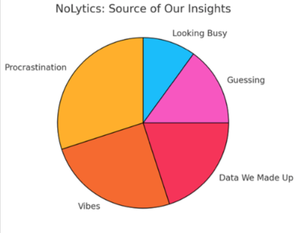
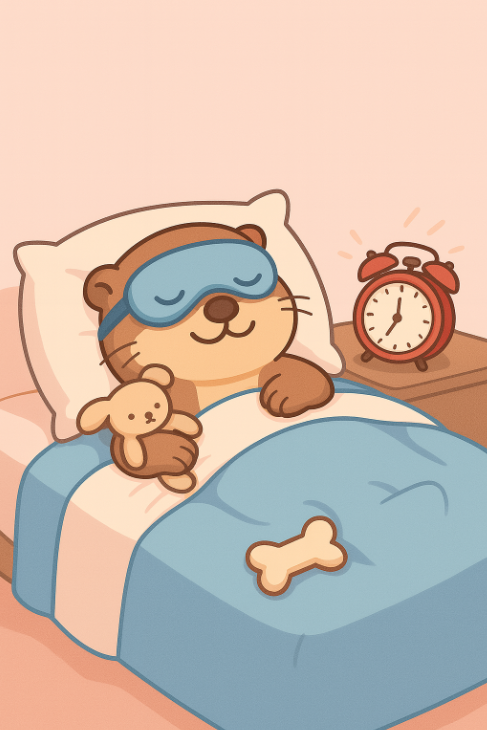

At Nolytics, we deliver advice you didn’t ask for and probably shouldn’t follow. Our research is as solid as a Google search done at 3 AM. Browse our top-tier recommendations- from productivity naps to passive-aggressive communication
Feeling sleepy: If you're feeling sleepy, take a 10-hour “power nap.” Set an alarm… but ignore it. If your body wants rest, who are you to argue with science?
Feeling Overwhelmed: Say “I’ve got this” out loud. Then proceed to ignore the situation entirely. Confidence solves everything
Want to Look Smart: Just say “that’s interesting” in response to anything. Bonus points if you nod slowly while doing it

Don’t Know What To Say: Just say “That’s wild”. Works for stories, complaints, and random life updates
Running Late? Say, “I’m on my way!” even if you’re still in bed. Technically, you are- eventually